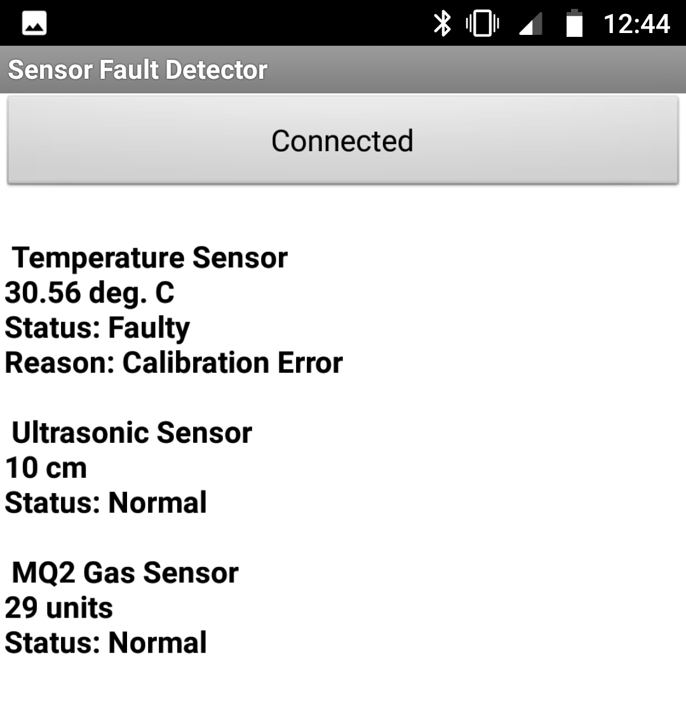
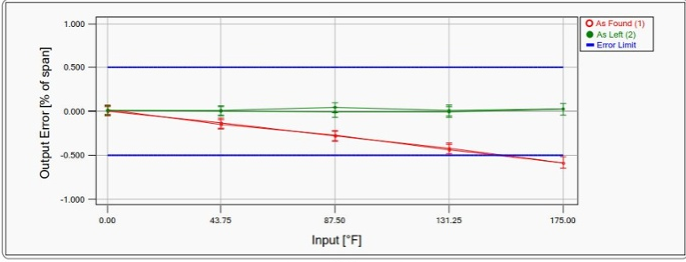

You can use the best possible sensor in your equipment but still get inaccurate results. Why? The most likely answer is that the sensor needs calibration in the systems they are being used for. Let us learn why sensor calibration is of utmost importance.In general use, calibration is often regarded as including the process of adjusting the output or indication on a measurement instrument to agree with value of the applied standard, within a specified accuracy.
Not Every Sensor is Perfect
For calibrating temperature sensor we have added a superfluous sensor in parallel with the interpreter one. So we will be gaining the result of standardized with the aid of calibrated results accordingly and we will keep a record of our first result and we transferred this data via bluetooth over an BT application.
In this project we will be handling majorly three types of faults, compartmentalize into three different nature which is as listed,
1) +VCC Supply Line fault.
2) Ground Line fault
3) calibration Error fault.
We will be identifying the cause of faults with the reason displayed.
.

